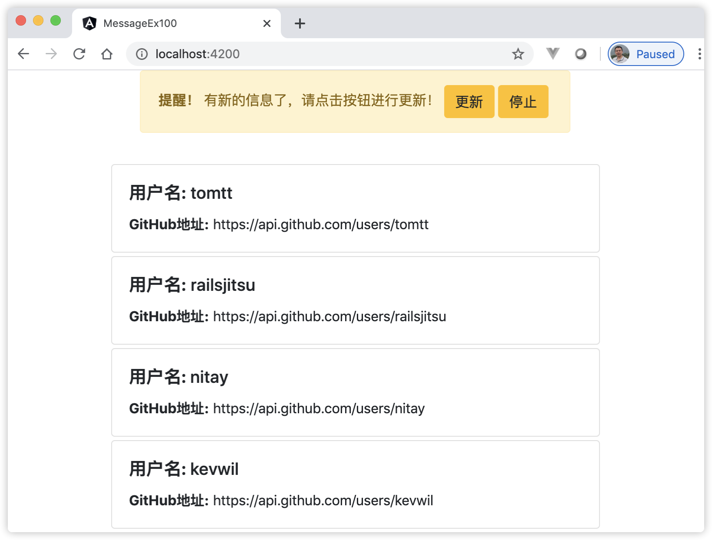

24 实现简单的消息通知机制¶
HttpClient和ReplaySubject缓存API Response数据，减少重复调用API的次数，从而提高性能。这种方法适用于每次返回的Response数据都不变的常量API。在实际业务中，还有一种API返回的值随着时间会有变化，这个时候就需要去更新RxJS缓存里的值。接下来就来介绍如何基于RxJS实现简单的消息通知机制。
24.1 实现简单的消息通知机制的需求分析¶
实现简单的消息通知机制的需求，从用户体检的角度出发，先在页面显示一个消息通知用户数据有更新，让用户选择是否需要更新页面内容，而不是直接在每次缓存更新以后直接刷新页面数据。分析这个需求，我们整理出下面几个核心要点。
24.2 如何缓存API Response数据¶
实现缓存API Response数据在本书的前面章节（使用RxJS的shareReplay操作符实现缓存效果）中介绍了，使用的方法就是通过shareReplay操作符来实现。shareReplay操作符会自动创建一个ReplaySubject对象，一旦HTTP请求执行一次以后，就会在后续的订阅和源头Observable之间建立一个ReplaySubject，ReplaySubject是一个多播的Hot Observable（热模式），后续订阅都是从这个中间ReplaySubject拿到最新的值，从而达到缓存效果。
24.3 如何更新RxJS缓存¶
我们的应用程序需要定时的轮询服务器的API接口，判断是否有新的值产生。使用RxJS的timer操作符可以满足这个要求，timer(0,10000)表示首次不用等直接调用API，之后每隔10s调用一次API。
24.4 页面的元素和数据流分析¶
在页面中应该有3组数据流，分别对应着页面初始值，页面待更新的值和提醒用户的信息。
应用中所有数据均来自ReplaySubject对象的缓存，用户第一次进入页面时，我们使用RxJS的take(1)操作符拿到缓存中的第一组值，赋值给页面作为初始值；然后使用RxJS的skip(1)操作符过滤掉缓存中的第一组值，作为页面的待更新值；当有待更新值时，页面将会出现一个提示框，该提示框中应该含有提示用的信息和一个用来更新数据的按钮。当用户选择单击按钮后，表示触发了更新当前页面数据的操作，这时，提示框和按钮均应该隐藏起来。当有待更新值时，提示框和按钮均显示的出现在页面上。显示和隐藏更新按钮，将会依次循环进行下去。
在页面中，用户点击按钮更新数据时，触发了页面的单击事件，这个单击事件，按照需求每隔10秒就有一次，随着时间的推移，它们形成了一个页面事件流；在这个事件流产生的过程中，每次点击按钮时，需要记录这个行为，表示按钮被点击了。当页面有待更新值的数据流产生时，我们也需要记录这个状态，表示用户可以更新数据了，这时页面将应出现提示信息。
24.5 合并页面事件流与API数据流¶
通过上述的页面的元素和数据流分析后，我们通过使用RxJS的merge操作符，把单击按钮产生的事件流与页面待更新值的数据流进行合并，产生一个新的流。单击按钮时，通过使用RxJS的mapTo(false)操作符记录这个状态；当有页面待更新的数据产生时，通过使用RxJS的mapTo(true)操作符记录这个状态；最终产生新流的值将会是一串表示状态的布尔值，如[false，true，true，……]。
同样的，我们也通过使用RxJS的merge操作符，将页面的初始数据流与单击页面按钮的事件流合并为一个新的流，新流的数据表示当前页面的初始数据。其中，单击按钮时，使用RxJS的mergeMap操作符将单击事件转化为请求页面的初始数据流。
24.6 [示例 message-ex100] 实现简单的消息通知机制¶
用Angular CLI构建应用程序，具体命令如下：
ng n message-ex100 -S --routing --defaults=true
启动服务，具体命令如下：
ng serve
查看应用程序结果。打开Web浏览器并浏览到 “http://localhost:4200”，应该看到文本 “Welcome to message-ex100!”。
编辑模块，添加HttpClientModule。编辑文件src/app/app.module.ts，并将其更改为以下内容：
import { BrowserModule } from '@angular/platform-browser'; import { NgModule } from '@angular/core'; import { AppComponent } from './app.component'; import { HttpClientModule } from '@angular/common/http'; @NgModule({ declarations: [ AppComponent ], imports: [ BrowserModule, HttpClientModule ], providers: [], bootstrap: [AppComponent] }) export class AppModule { }
使用Bootstrap样式，安装 NG-Bootstrap 组件库，具体命令如下：
ng add @ng-bootstrap/ng-bootstrap
创建Notification组件和服务，具体命令如下：
ng g c notification ng g s notification
编辑Notification服务。编辑文件src/app/notification.service.ts，并将其更改为以下内容：
import { Injectable } from '@angular/core'; import { Observable, timer, of, Subject } from 'rxjs'; import { User } from './user'; import { HttpClient } from '@angular/common/http'; import { shareReplay, switchMap, map, catchError, takeUntil, repeatWhen } from 'rxjs/operators'; @Injectable({ providedIn: 'root' }) export class NotificationService { REFRESH_INTERVAL: number = 10000; // 定义10秒的时间 Github_API: string = "https://api.github.com/users?since="; private cacheUsers$: Observable<Array<User>>; // 定义缓存数据 private userStartId: number = 0; // Github API 地址中的起始参数 private readonly _stop = new Subject<void>(); private readonly _start = new Subject<void>(); constructor(private http: HttpClient) { } get users(): Observable<Array<User>> { if (!this.cacheUsers$) { // 首次cacheUsers$为空，则执行下面的操作 const timer$ = timer(0, this.REFRESH_INTERVAL); this.cacheUsers$ = timer$ // 首次进入代码时，访问一次Github API。接着，每隔10秒访问一次 .pipe( switchMap(() => this.requestUsers()), shareReplay({ refCount: true, bufferSize: 1 }), takeUntil(this._stop), repeatWhen(() => this._start) ); } return this.cacheUsers$; } private requestUsers(): Observable<Array<User>> { this.userStartId = this.userStartId + 30; // 每次开始数递增30 return this.http.get<Array<User>>(this.Github_API + this.userStartId) .pipe( map(respone => respone), catchError(error => { console.log("发生错误 " + error) return of([]); }) ) } start(): void { this._start.next(); } stop(): void { this._stop.next(); } }
编辑Notification组件。编辑文件src/app/notification/notification.component.ts，并将其更改为以下内容：
import { Component, OnInit } from '@angular/core'; import { Observable, Subject, merge } from 'rxjs'; import { User } from '../user'; import { NotificationService } from '../notification.service'; import { mergeMap, take, skip, mapTo } from 'rxjs/operators'; @Component({ selector: 'app-notification', templateUrl: './notification.component.html', styleUrls: ['./notification.component.css'] }) export class NotificationComponent implements OnInit { users$: Observable<Array<User>>; // 定义缓存中的数据 updateClick$ = new Subject<void>(); // 定义单击页面上的按钮事件 showNotificatoin$: Observable<boolean>; // 定义是否显示页面提示信息 showButton: Boolean = true; // 针对开始和停止按钮，同一时间仅显示一个 constructor(private notificationService: NotificationService) { } ngOnInit() { const initialUsers$ = this.getUserOnce(); // 首次访问用户信息 const updateUsers$ = this.updateClick$.pipe( mergeMap(() => this.getUserOnce()) ); // 合并 this.users$ = merge(initialUsers$, updateUsers$); const initNotification$ = this.getNotifications(); const show$ = initNotification$.pipe(mapTo(true)); const hide$ = this.updateClick$.pipe(mapTo(false)); this.showNotificatoin$ = merge(show$, hide$); } getUserOnce() { return this.notificationService.users.pipe(take(1)); // 取缓存的最新值 } getNotifications() { // 过滤缓存的第1次信息。这里表示：第一次返回null，从第2次开始起获取值。 return this.notificationService.users.pipe(skip(1)); // } start(): void { this.showButton = true; this.notificationService.start(); } stop(): void { this.showButton = false; this.notificationService.stop(); } }
编辑Notification组件模板。编辑文件src/app/notification/notification.component.html，并将其更改为以下内容：
<div class="container"> <div class="row justify-content-md-center" *ngIf="showNotificatoin$ | async"> <div class="alert alert-warning" role="alert"> <strong>提醒！</strong> 有新的信息了，请点击按钮进行更新！ <button type="button" class="btn btn-warning" (click)="updateClick$.next()">更新</button> <button type="button" class="btn btn-warning m-1" (click)="stop()" *ngIf="showButton">停止</button> <button type="button" class="btn btn-warning m-1" (click)="start()" *ngIf="!showButton">开始</button> </div> </div> <!-- <div class="row justify-content-md-center mt-1"> {{showNotificatoin$ | async | json}} <br> </div> --> <div class="row justify-content-md-center mt-3"> <div class="col-md-10 col-lg-6"> <div class="card m-1" *ngFor="let user of users$ |async"> <div class="card-body"> <h5 class="card-title"><strong>用户名:</strong> {{user.login}} </h5> <p class="card-text"><strong>GitHub地址:</strong> {{user.url}} </p> </div> </div> </div> </div> </div>
编辑根组件模板。编辑文件src/app/app.component.html，并将其更改为以下内容：
<app-notification></app-notification>
观察应用程序页面，页面显示效果如图24-1所示：
图24-1 演示实现简单的消息通知机制
{kind=link}
在上面的步骤中，完成了以下内容：
本示例为了使用Bootstrap样式，安装了 NG-Bootstrap 组件库；
在Notification服务类中，定义了一个users()的访问器方法，在该方法中，首先判断缓存中是否为空，如果为空的话，使用timer创建器每隔10s定期的调用requestUsers()方法检索用户信息，使用shareReplay()操作符缓存最新的数据。在检索用户信息的requestUsers()方法中，每次请求不同的参数，目的是返回不同的结果，模拟服务器数据的更新；示例中为shareReplay操作符配置了一个refCount()操作符，refCount()操作符负责自动连接()第一个订阅，只要至少有一个订阅者，那么它将会保持订阅的数量，并保持Subject与Source的连接。takeUntil(）操作符的目的是接受一个停止订阅的事件，而repeatWhen()操作符的目的则是接受一个继续开始的事件。这两个事件在类中分别暴露了2个对外的方法，供Notification组件类调用；
在Notification组件类中，首先定义了3个数据流对象变量，接着在ngOnInit()方法中，对它们进行初始化。当用户第一次进入页面，也就是0s时，调用API拿到的30位github的用户信息，然后通过take(1)操作符拿到首次加载页面的30位github用户信息。updateClick$对应着页面的点击更新按钮的事件流，每次点击时，将这个动作转换为获取后端数据，拿到最后一次API返回的用户信息，然后在通过merge操作符把两个Observable合并；initNotification$对应页面的待更新值，在方法中使用RxJS的skip(1)操作符过滤掉缓存中的第一组值，当用户首次进入页面时，initNotification$的值为null，同时，页面上的按钮也没有被点击，其对应的updateClick$数据流为空，最终这两个数据流合并在一起的新流showNotificatoin$里面也为空，关于这点，读者可以打开Notification组件类模板中的注释，在页面上直观的查看showNotificatoin$值的变化；
在Notification组件类模板中，还额外定义了开始和停止按钮，它们分别对应组件类中的start()和stop()方法，在方法中分别调用Notification服务类中的对应同名方法。
程序运行中，观察页面控制台，每隔10秒钟，应用会访问一次Github API，每次访问的地址参数发生了变化，以致返回的不同的结果。用户可以点击页面上的“停止”按钮，这时，观察页面控制台，应用程序将会停止访问Github API，直到用户再次点击“开始”按钮，程序将会继续访问Github API。
出于本书的目的将读者的精力尽量聚焦在Angular知识本身，本示例的后端数据依然选择GitHub上的开源API数据，当实践中遇到类似下面的错误时，可以参考后面的解决思路：
Access to XMLHttpRequest at 'https://api.github.com/users?since=30' from origin 'http://localhost:4200' has been blocked by CORS policy: No 'Access-Control-Allow-Origin' header is present on the requested resource.
上述错误产生的原因是：本机访问Github API的权限被Github服务器限制了。这时候，如果在浏览器中访问上面信息中的API地址时，页面返回如下信息：
{"message":"API rate limit exceeded for <IP>. (But here's the good news: Authenticated requests get a higher rate limit. Check out the documentation for more details.)","documentation_url":"https://developer.github.com/v3/#rate-limiting"}
按照页面“documentation_url”中的提示，只要认证通过Github API的用户，可以在1小时内访问5000次API，Github用户认证过程很简单，具体命令如下：
curl -u "username" https://api.github.com # 将username换成读者github的账号执行上述命令后，接着被要求输入密码。通过后，在接下来的1小时内，可以顺畅地访问Github API了。
24.7 小结¶
本章介绍了如何实现简单的消息通知机制，重点的是把本书前面章节的内容组织在一起，例如，如何缓存即更新API Response数据，安装Bootstrap依赖，介绍了RxJS库中的几种操作符在实际业务中的使用，最后通过实战演示了实现简单的消息通知示例。本示例的雏型在实际应用中非常常见，读者可以在这个示例的基础上，举一反三，进一步实现更多的功能。